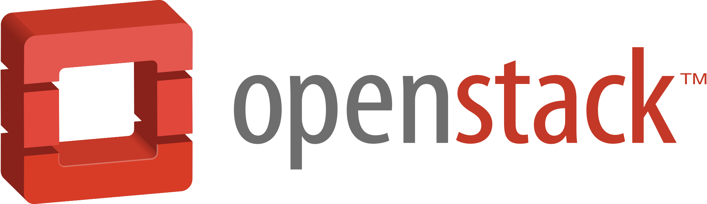

Jio Private Cloud
JAWS
Created by Akshay Shipurkar and Nitish Chauhan
What is Openstack ?
“OpenStack is a cloud operating system that controls large pools of compute, storage, and networking resources throughout a datacenter, all managed through a dashboard that gives administrators control while empowering their users to provision resources through a web interface.”
Who Created it ??
It Begin as a joint project In 2010
 &
&
1st Community Release Through Openstack Foundation in 2012. Now 500 + Companies are involved in active developement


The Most Innovative Companies In The World Move Faster With Openstack
We Have Partnered with
Leading contributor to Openstack Project
Openstack Architecture Overview
Our Current Role at JAWS
“ To Monitor and Report Issues in the Production Cloud Environments.”
We currently have 6 Production Clouds.
3 Staging Clouds.
1 Kubernetes cluster.
Total inventry of 1500 + servers and More adding
Tools Currently Used
- Consul - Service Discovery Tool
- Ceph-dashboard - Monitoring Ceph Cluster Status
- Stacklight 2.0 - New addition to our tool chain
- Slack - Team Communication and alerts sent by bots
Q & A
List of Lynda.com - Linux courses
- Installing Linux on a physical machine
- Learning Linux Command Line
- Linux: Shells and Processes
- Linux: Files and Permissions
- Linux: User and Group Management
- Linux: System Information and Directory Structure Tools
- Linux: System Maintenance
- Linux: Storage Systems
- Linux: BIND and DNS
- Linux: Package Managers and Repositories
- Linux: Network Configuration
- Understand Linux IPTables
- Linux: Firewalls and SELinux
- Linux: File Sharing Services
- Linux: Multitasking at the Command Line
- Linux: Bash Shell and Scripts
- Learning Linux Shell Scripting
- Investigating the Linux network interface
- Linux: Kernel and Logging for System Administration
List of Lynda.com - Openstack courses
- DevOps Foundations: Infrastructure Automation
- Cloud Computing: Private Cloud Platforms
- Learning Cloud Computing: Application Migration
- Learning Cloud Data Storage
- Cybersecurity with Cloud Computing
- Learning Ansible